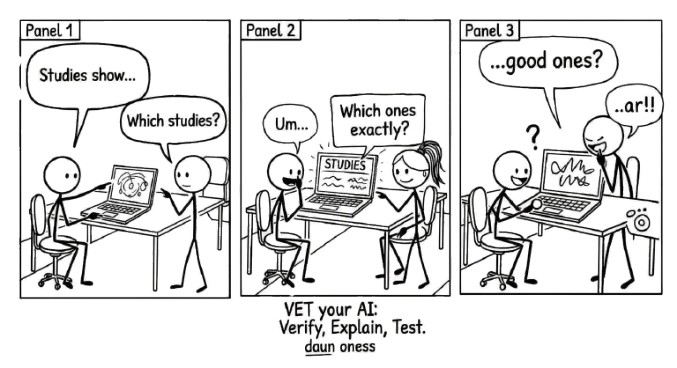

8 VET Your AI: The Push-Back Framework

If you cannot verify it, explain it, and test it, you are not done yet.
The most dangerous AI output is the one that sounds right.
It is not the obvious hallucination, the garbled sentence, or the response that makes you squint and say “that can’t be correct.” Those are easy to catch because they feel wrong.
The dangerous output is the one that reads smoothly, cites plausible-sounding sources, and fits neatly into your expectations. You nod along, accept it, paste it into your document, and never check, because nothing triggered your suspicion.
Critical evaluation fails most often when AI is subtly wrong in a way that sounds completely right.
If you cannot explain it in your own words, you do not understand it well enough to use it.
Chapter 7 established why your critical eye matters. This chapter gives you a method for using it. Three steps, three questions, one habit that turns passive acceptance into active evaluation.
8.1 The VET Framework
VET stands for Verify, Explain, Test. It is a thinking habit you run through every time you receive AI output that matters.
Each step asks a single question. Answering all three gives you an explicit basis for review; it is not a guarantee of correctness or a substitute for specialist approval. If you cannot, you do not understand it well enough to use it.
8.1.1 Verify: Can I find this independently?
The first question is about sources. AI presents claims with absolute confidence regardless of whether those claims are true. Your job is to check.
Check sources. If the AI cites a study, find that study. If it names an author, confirm the author exists and actually said what the AI claims. AI can generate a plausible reference that does not exist or misstate the findings of a real one. Check both existence and support.
Cross-reference claims. Take the key factual claims and verify them through independent channels. A textbook, a colleague, a database, a primary source. If a claim only exists in the AI’s output and nowhere else, treat it with extreme scepticism.
Look up citations. This bears repeating because it is the most common failure point. AI will produce beautifully formatted references that do not exist. It will attribute findings to real researchers who never conducted those studies. The only way to know is to look.
Verification is due diligence. You would not submit a report based on a single anonymous source. Do not submit one based on unverified AI output.
Consider this deliberately constructed answer: “Retrieval-augmented generation eliminates factual errors; see Lewis et al., 2020.”
The cited paper is real: Retrieval-Augmented Generation for Knowledge-Intensive NLP Tasks. That does not make the claim true. Its reported improvements are not a guarantee that retrieval eliminates errors.
The check has two stages: confirm the work exists, then compare the particular claim with what it establishes. Record the title, source location, and supported conclusion. An accurate bibliography attached to an exaggerated claim still fails verification. This example is a teaching construction, not a measured transcript or a claim about a specific product.
8.1.2 Explain: Can I explain this in my own words?
The second question is about understanding. There is a difference between having an answer and understanding an answer. AI can hand you the first. Only you can build the second.
If you cannot explain it, you do not understand it. This is a hard rule. If someone asked you to explain the AI’s output without looking at it, could you? If the answer is no, you are holding words, not knowledge. You are carrying a bag someone else packed, and you do not know what is inside.
Rewrite it in your own language. Take the AI’s output and translate it into your words, your framing, your way of explaining things. This works as a comprehension test: rewriting forces you to process the content rather than skim it. Where you struggle to rephrase, that is where your understanding has a gap.
Teach it to someone. The best test of understanding is explanation. If you can teach the concept to a colleague who is unfamiliar with it, you understand it. If you find yourself falling back on the AI’s exact phrasing because you cannot find your own, you have memorised, not learned.
This step is where the Conversation Loop earns its name. You are processing the information, internalising it, making it yours.
8.1.3 Test: Does this hold up under scrutiny?
The third question is about robustness. Even verified, well-understood output can be fragile. It might be correct in one context and wrong in another. It might work under ideal conditions and fail under real ones.
Devil’s advocate it. Argue against the AI’s output. What are the strongest objections? What would a sceptic say? If you cannot think of a counter-argument, you have not thought hard enough, or you need to ask the AI itself: “What are the strongest arguments against what you just told me?”
Check edge cases. AI tends to give you the central case, the most common scenario, the textbook answer. Real work happens at the edges. What happens when the inputs are unusual? When the assumptions do not hold? When the context shifts?
Ask “what if?” Change a variable. Shift a constraint. Alter a condition. Does the output still hold? If the AI told you something works at a specific temperature, what happens five degrees higher? If it recommended a strategy for one market, does the logic transfer to another? Fragile answers break under “what if.” Robust answers flex.
Testing is where you discover whether the AI gave you something genuinely useful or just something that sounds useful under narrow conditions.
8.2 VET in Practice
Applied to real AI output, VET looks like this:
| AI says… | V: Verify | E: Explain | T: Test |
|---|---|---|---|
| “Studies show pH drops faster in co-culture” | Find the actual studies | Can I explain the mechanism? | What about different substrates? |
| “Optimal temperature is 37C” | Check the literature | Why 37C specifically? | What happens at 35C or 40C? |
| “This method has 95% recovery rate” | Where’s that number from? | What does 95% mean here? | Under what conditions? |
Verify asks “is this real?” Explain asks “do I understand this?” Test asks “is this the whole picture?” Each question catches a different kind of failure.
The first column catches fabrication. The second catches shallow acceptance. The third catches overconfidence. Together, they cover the three most common ways people get burned by AI output.
8.3 When to VET
Not everything needs the full treatment. If you ask AI to help you brainstorm synonyms for a word, you do not need to verify sources, explain the mechanism, and test edge cases. Use your judgement.
VET matters most when:
- The output contains factual claims you will rely on.
- You are making a decision based on the AI’s analysis.
- The output will be shared with others who will assume you checked it.
- The stakes are high enough that being wrong has consequences.
The higher the stakes, the more thorough your VET should be. A casual brainstorm gets a light pass. A client deliverable gets the full treatment. A medical or legal application gets VET plus additional expert review, because AI output in those domains can be confidently, fluently, dangerously wrong.
8.4 The Habit
VET works best when it becomes an automatic reflex. You read AI output and your mind naturally asks: can I verify this, can I explain this, does this hold up?
Building this habit takes deliberate practice at first. For the next week, try this: every time you use AI output in your work, pause and run through the three questions. Write your answers down if that helps. After a few dozen repetitions, you will stop needing to write them down. The questions will just be there, running in the background every time you read AI-generated text.
This is the Iterate stage of the Conversation Loop made concrete. When you VET, you are not passively consuming output. You are actively evaluating it, pushing back on it, strengthening it.
Ask AI a factual question about your field, something you can check. Then VET the response fully. Verify one claim independently. Explain the answer in your own words. Test it with an edge case or a changed variable. The whole process takes ten minutes. What you learn about the AI’s reliability in your domain is worth far more.
Not everything needs the full VET treatment. A casual brainstorm gets a light pass. A client deliverable gets the full treatment. The higher the stakes, the more thorough your check should be.
8.5 Owning the Output
When you verify a claim, you know it is true because you checked, not because the AI sounded confident. When you can explain something in your own words, you understand it, not because you read it, but because you processed it. When you test an idea and it holds up, you know its limits and its strengths.
What separates someone who uses AI well from someone who uses it carelessly is what they do after the AI responds.
8.6 Independent practice: Verify, Explain, Test
Time: 15–20 minutes. Use the venue source cards and the failed first proposal in Chapter 13. Verify capacity and time with arithmetic, explain each error in your own words or a diagram, then change one participant count and test the plan again.
Artefact: three short VET notes. Success: identify 14 people against a 12-person limit and 100 minutes against a 90-minute booking. No AI account is needed to complete the independent version.